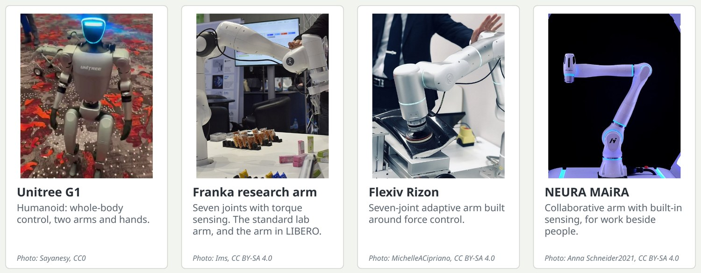
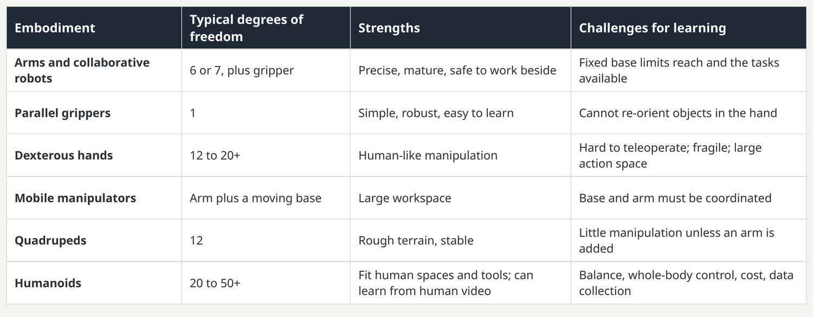
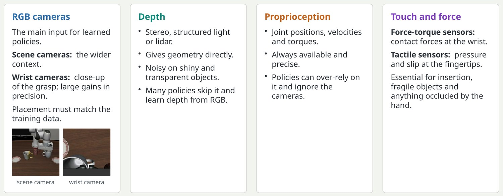

Four robots you will meet
The methods in this deck run on machines like these.

The G1 is a compact humanoid that many labs now use. The Franka arm is the most common research manipulator and is the arm simulated in the LIBERO benchmark used for figures in this deck. Flexiv and NEURA build arms designed for force-sensitive and collaborative work. Photo credits are on the last slide.
Key pointDifferent bodies, same recipe: cameras in, action chunks out.
The bodies: what robot are we actually controlling?
The same learning methods run on very different machines; each body sets different constraints.

Degrees of freedom are typical ranges and vary by model. Examples to mention: seven-axis collaborative arms such as the Franka research arm; humanoids such as the Unitree G1 and H1. A practical point: most public manipulation data is from single arms with parallel grippers, so that is where policies are strongest today.
Key pointThe body decides the action space, the data you can collect and what can go wrong.
Sensing: what the robot knows about the world and itself
A policy can only use what its sensors provide; choosing and placing sensors is part of the design.

The takeaway line is a useful test: sit a person at the teleoperation station with only the robot's camera views. If they cannot do the task, the sensors are insufficient. Touch is under-used today mostly because tactile data is scarce and sensors vary, not because it is unimportant.
Key pointIf a human teleoperator could not do the task with the robot's sensors, the policy cannot either.